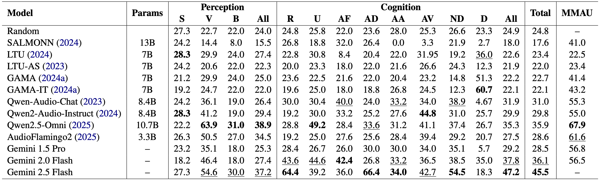
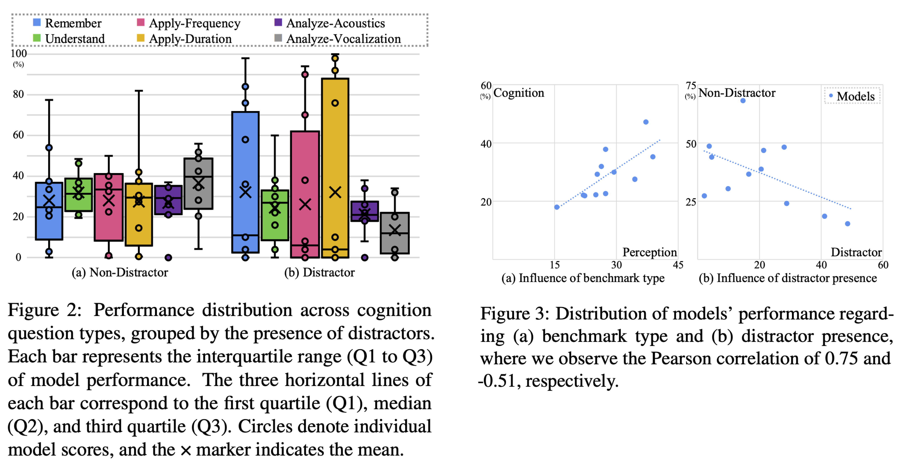
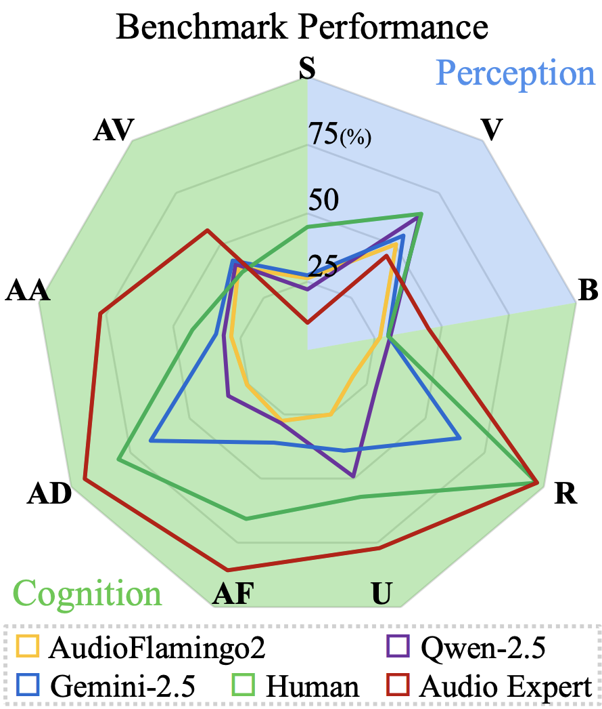

The audio recordings and associated metadata used in this work were sourced from Watkins Marine Mammal Sound Database, Woods Hole Oceanographic Institution, and the New Bedford Whaling Museum . We gratefully acknowledge the New Bedford Whaling Museum for granting permission to use the database for research purpose
Example Questions
| Audio | Options |
|---|---|
|
Question:Which type of vocalization is most likely identified in the sound recording? Type: Perception/Vocalization |
A. Continuous modulated tones B. High-pitched whistles C. Single moan D. Series of rapid pulsed clicks |
|
Question: Based on the acoustic characteristics of the sound, which of the following best describes the main feature of the recording? Type: Cognition/Understand |
A. Repetitive short broadband bursts. B. A continuous low-frequency tone around 400 Hz. C. Modulated mid-frequency tones primarily between 1–4 kHz. D. A high-pitched modulating tone primarily above 8 kHz. |
|
Question: Given the following sound sequence: The first sound occurs before the first silence, the second sound occurs after the first silence, and the third sound occurs after the second silence. Which sound is most dominant in higher frequencies? Type: Cognition/Apply-Frequency |
A. The first sound B. The second sound C. The third sound D. All the sounds are identical in frequency range |
|
Question: Given the following sound sequence: Sound 1 occurs before the first silence, Sound 2 occurs after the first silence, and Sound 3 occurs after the second silence. Which sound is most dominant in higher frequencies? Type: Distractor: Cognition/Apply-Frequency |
A. Sound 1 B. Sound 2 C. Sound 3 D. All the same |
Example questions across all tasks, each paired with a spectrogram of the corresponding input audio.

Experiment Results

LALMs perform poorly on the WoW-Bench, highlighting their limiations in their low-level listening.

LALMs' performance vary in Cognition tasks, highlighting strengths and weaknesses of each model's low-level listening abilities. Also, we observed negative correlation between distractor and non-distractor performance, indicating a reliance on non-acoustic cues.

Comparison with human performance with mini-test split. We compare human accuracy against best-performing models. Human and model performance are comparable in the Perception benchmark, but human significantly outperform models on Cognition benchmark.

In Cognition tasks, LALMs tend to first infer a sound category and then make decision based on the presumed acoustic characteristics of the inferred class, leading to wrong conclusion.
Acknowledgements
BibTeX
@article{kim2025wow,
title={WoW-Bench: Evaluating Fine-Grained Acoustic Perception in Audio-Language Models via Marine Mammal Vocalizations},
author={Kim, Jaeyeon and Yun, Heeseung and Woo, SangHoon and Yang, Chao-Han Huck and Kim, Gunhee},
journal={arXiv preprint arXiv:2508.20976},
year={2025}
}